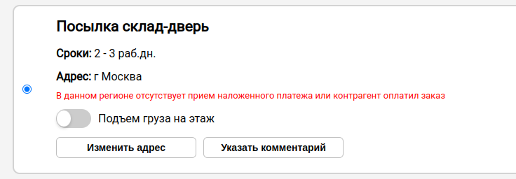

Решение позволяет автоматически рассчитать стоимость доставки, создавать и скачивать накладные прямо из заказа в МойСклад, что экономит время и снижает затраты.
Интеграция помогает сократить трудозатраты менеджеров, оптимизировать процессы доставки и повысить рентабельность за счет заранее заполненных данных.
Разработка основана на многолетнем личном опыте работы с СДЭК для своего интернет-магазина.
Данные настройки отвечают за корректную передачу значений веса и габаритов из МоегоСклада в СДЭК. На основании этих настроек будут рассчитаны параметры отправления в виджете приложения и при автоматическом создании накладных.
Для добавления Грузового места, введите вес (кг) и выберите размер коробки.
Данные из выпадающего списка "Размеры коробки" берутся из настроек виджета. Также для удобства есть валидация для добавления.
В грузовом месте можно просмотреть информацию о товаре.
Вы можете изменить вес и размер коробок у любого Грузового места, скопировать удалить его.
Перед установкой виджета добавьте в "Настройки заказов покупателей" дополнительное поле "Способ оплаты".
Для правильного использования виджета это дополнительное поле необходимо!И при каждом создании заказа это поле необходимо заполнять, так как виджет будет использовать его для определения способа оплаты.
Если поле будет не заполненное, то вариант будет выбран "Без наложенного платежа"
Данный переключатель показывает менеджеру будет ли браться платеж при получении. Существует два варианта отправки:
Также данная информация отображается на странице Тарифы.
В этой странице виджета выводятся точки ПВЗ (Пункт выдачи и Постамат) и стоимость по тарифам, доступным для отправления по заданным параметрам.
Тарифы отображаются следующими доставками:
Тарифы выводятся для удобства от наименьшей цены доставки.
Так как пока доступен только "Тип отгрузки" - "От склада", соответственно все тарифы выводятся для отгрузки с склада.
При выборе тарифа "склад-дверь", можно указать дополнительные данные, либо изменить адрес доставки (пока доступно изменение только адреса, но не города).
Если контрагент оплатил заказ или в городе получателя недоступен Наложенный платеж, то менеджер получает уведомление.
В зависимости от выбора ПВЗ (Пункт выдачи или Постамат) будут отображаться разные назначения на карте.
В приложении всегда актуальный список ПВЗ, который обновляется раз в сутки.
Пункт выдачи:
Постамат:
Если пользователь не выберет точку ПВЗ при заказе, он получит сообщение с предупреждением.
Если контрагент решил оплатить доставку самостоятельно, то есть возможность выбрать это
В этой странице виджета будет отображаться результат и краткая информация создания заказа в СДЭК.
Заказ успешно создан:
ВАЖНО! Необходимо войти в личный кабинет СДЭК в том же браузере, в котором открыт виджет, только в том случае произойдет переход в заказу.
Если Грузовых мест больше одного, то появляется возможность распечатать печати для каждого грузового места.
Заказ не создан: